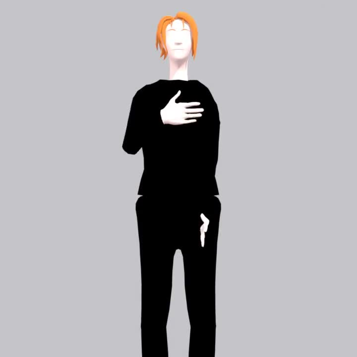

a lot of apps would pass this

flat hand on your chest...
✓ naive check: PASS
but that's not PLEASE ❌
✗ no motion = no sign
PLEASE needs the circle 🔄
it checks the motion, every time
✓
Hand shape
✓
Location
✗
✓
Movement — the circle
no more static poses 🤟


QuickSign
free. no downloads. no catch.